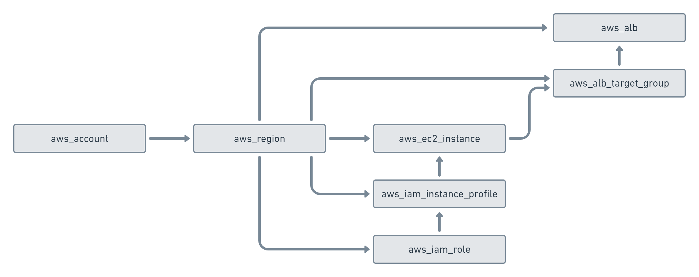
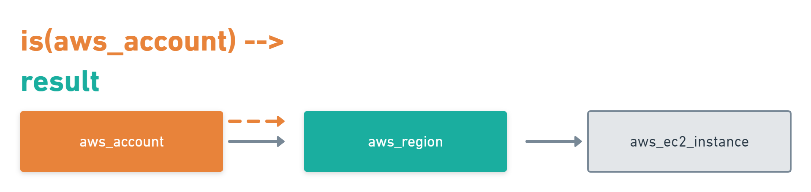
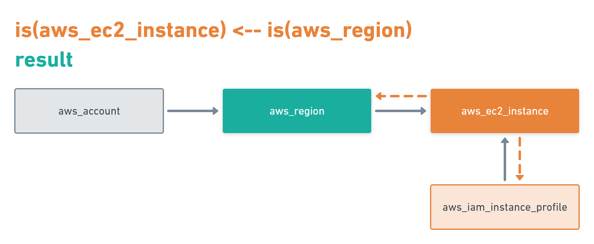
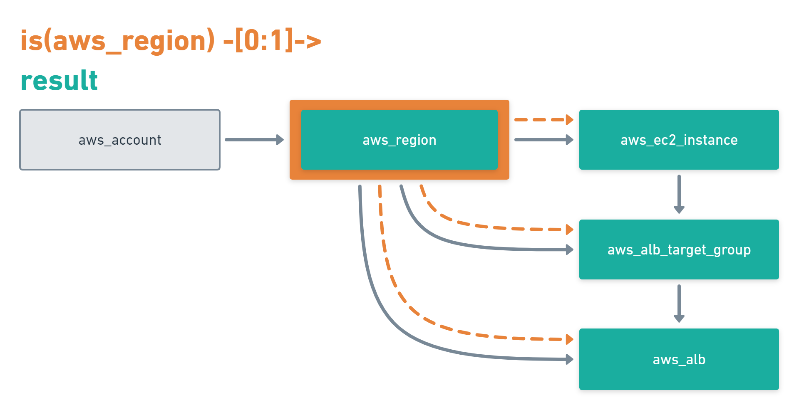

Discovery
You can search your cloud infrastructure and find the resources you are looking for using Cloudkeepers powerful query language.
Cloudkeeper maintains its collected data in a graph database. This graph can be accessed via the query language.
Commands can be connected using a pipe to form complex and deep requests about resources, dependencies and connections in your infrastructure.
To learn about your new superpowers and use them in the best way, it is important to understand the data model and structure.
Graph Node
A graph node is a json document with a well defined structure and these top level properties:
{
"id": "xxx",
"kinds": [ ... ],
"reported": { ... },
"desired": { ... },
"metadata": { ... }
}
Each graph node always has an id that is a unique id created by Cloudkeeper as well as a kinds array containing the kind of the node including all it’s parents kinds.
It also features three main sections: reported, desired and metadata.
You learn more about the structure and sections in our Spotlight: Graph Node.
Available Commands
In the cksh CLI you have have a couple of commands available that help you accessing the graph database.
Commands can also be chained by using | pipes - and not just the following commands!
Chaining is very powerful when used with other commands like count.
We advise to use help in the cksh CLI to get more information about the commands.
query
Using the query command, you access the root level of the node.
Example
query reported.kind == aws_region
This will select all AWS regions
reported
reported will directly access the reported section of a graph_node.
Example
reported kind == aws_account
This will select all AWS accounts
You can also use the command match as an abbreviation for reported:
match kind == aws_account
desired
desired will directly access the desired section of a graph node.
Example
desired clean = true
This will select all graph nodes that are marked for cleanup
You can also set properties in the desired section by using the set_desired command:
set_desired clean = false
An example, selecting all graph nodes that are marked for cleanup and reversing this by chaining the two commands using a pipe:
desired clean == true | set_desired clean = false
metadata
metadata will directely access the metadata section of a graph node.
Example
metadata ancestors.cloud.name == aws
This will select all graph nodes that are part of AWS clouds
You can set metadata directly or add custom metadata by using the set_metadata command.
match kind == aws_region | set_metadata foo = "bar"
This will set the field foo to the value bar inside the graph nodes metadata section.
The following sections always assume the global level using the query command.
Selecting Nodes
Select nodes by kind
Every node has a kind, which describes the structure of this node. The model supports inheritance: every specific type is also an instance of every more general type of this specific type.
Take a graph node with a type of aws_ec2_instance as an example.
This type is subtype of the types: instance, aws_resource and resource.
In order to select nodes by a specific type, the query language supports the is(kind)
function. The term is(instance) would select the ec2 instance above, but also all other
instances, e.g. google cloud instances.
The term is(aws_ec2_instance) would select only
ec2 instances from aws.
Since the is(kind) does not belong to any section, it can be used on every level.
Example
query is(aws_ec2_instance)
will select the same nodes as:
metadata is(aws_ec2_instance)
Select nodes by predicate
In order to filter for specific attributes of a node, it is possible to define predicates.
A predicate always has the syntax: <property_path> <operation> <value>.
property_path
The property_path is the path to the property in the json structure.
A nested attribute is accessed via the ..
To access the name in the reported section, one would write reported.name.
A property inside an array is accessed via [position].
So to access the first element of an array we can write [0].
If the position is not known or does not matter we can write [*].
operation
The operation is one of the following options:
= or == : Property is equal to the provided value.!= : Property is not equal to the provided value.<= : Property is less than or equal to the provided value.>= : Property is greater than or equal to the provided value.> : Property is greater than the provided value.< : Property is less than the provided value.~ or =~ : Property conforms to the given regexp. Only applicable to strings.!~ : Property is not conform to the given regexp. Only applicable to strings.in : Property is one of the following values. The value has to be an array.not in : Property is not one of the following values. The value has to be an array.value
The value can be any json literal or any json conform value.
Example predicates
reported.name == "sunset"Select all nodes where reported.name is exactly the string “sunset”.reported.name == sunsetSame as above. parentheses are optional as long as the string is not a number and does not have special characters.reported.instance_cores > 2Select nodes with more than 2 reported.instance_cores.reported.name =~ "sun.*"Selects all nodes where reported.name adheres to the regular expressionsun.*.reported.name in ["sunset", "sunrise"]Selects all nodes where reported.name is either sunset or sunrise.
Select nodes by id
Nodes can be selected by their id via the id(xyz) function. This function can be used globally no matter which section is used.
Combine selections
All listed selections can be combined with and and or clauses.
In order to define precedence, it is possible to put brackets around terms.
Examples of combined terms
query reported.name == sunset or reported.name == sunrise : Select nodes where reported.name is either sunrise or sunset.query is(aws_ec2_instance) and reported.name==sunrise : Select aws_ec2_instance nodes where reported.name is sunrise.query is(aws_ec2_instance) and (reported.instance_type=="m5a.large" or reported.instance_cores>2) : Select aws_ec2_instance nodes of specific type or more than 2 cores.Graph Edges
Nodes in the graph are connected via edges. Edges in the graph are directed, starting from a node pointing to a node. In order to traverse the graph in a meaningful way, it is important to understand the structure of the graph. The following model is only a subset of the graph model you will find in Cloudkeeper, but illustrates nicely how we can walk edges in the graph.
All of the resources in aws are placed in a region. The region is one node in the graph. If we want to know all resources in the graph we need to walk outbound (following the edges in direction of the arrow). If we want to know the account of a specific resource, we need to walk inbound (following the edge in reverse direction of the arrow) in the graph until we find an account.
Traversal Selectors
Inbound and outbound
<-- traverses the graph inbound, --> traverses the graph outbound.
Select all direct nodes outbound of node
--> traverse the graph outbound to the next level.
Example
query is(aws_account) -->
This will select all aws accounts and then traverse in the graph outbound. According to the model above, this query would return a list of all matching regions.
Select all direct nodes inbound of node
<-- traverse the graph inbound to the next level
Example
query is(aws_ec2_instance) <-- is(aws_region)
This will select all aws ec2 instances in the database and then traverse in the graph inbound. According to the model above, this query would return a list of all matching regions and instance profiles. For the sake of this example, we want to filter this list even further to only return the aws regions of the ec2 instances.
Select nodes that include the current node
-[0:1]-> traverse the graph outbound starting from the current node (0) until the next level (1).
The result will contain the current node plus all nodes one level outbound.
The same applies for inbound with this statement <-[0:1]-.
Example
query is(aws_region) -[0:1]->
This will return a list of all resources “under” a aws_region together with the matching aws_region.
Example
query is(aws_region) and reported.name==global <-[0:1]-
This will return a list of all aws_regions with name global together with all accounts.
Select nodes with a defined depth in the graph
-[start:until]-> traverses the graph outbound starting from a user defined depth to a user defined depth.
The graph will be traversed from the current node according to this specification. All matching nodes will be returned.
The same applies for inbound traversals with <-[start:until]-.
Example
query is(aws_alb_target_groups) <-[2:2]- is(aws_iam_instance_profile)
This query can answer the question: which instance profile is used for ec2 instances connected to an alb target group. It selects all aws_alb_target_groups and than traverses 2 levels inbound in the graph and filters for aws_iam_instance_profiles. The result is a list of aws_iam_instance_profiles.
Select nodes with an undefined depth in the graph
-[start:]-> traverses the graph outbound starting from a user defined depth to the leafs of the graph.
The graph will be traversed from the current node according to this specification. All matching nodes will be returned.
The same applies for inbound traversals with <-[start:]-.
Example
query is(aws_account) and reported.name==sunshine -[0:]->
This query will select the aws account with name sunshine and then select all nodes outbound to this node.
This will select everything Cloudkeeper knows about nodes in this account.
Select inbound and outbound nodes
<-[start:until]-> traverses the graph inbound and outbound starting from a user defined depth to a user defined depth.
The graph will be traversed from the current node according to this specification. All matching nodes will be returned.
Example
query reported.name="sunset" and is(aws_account) <-[0:]->
This will select all nodes that are connected on any depth in any way to the AWS account with the name sunset.
Abbreviations
There are abbreviations for the most common traversal selectors.
Example
--> and <-- are abbreviations to -[1:1]-> and <-[1:1]-query is(aws_account) --> is equivalent to query is(aws_account) -[1:1]-><--> is an abbreviation for <-[1:1]->query is(aws_region) <--> is equivalent to query is(aws_region) <-[1:1]-><-[x]- is an abbreviation for <-[x:x]-query is(aws_region) <-[3]-> is equivalent to query is(aws_region) <-[3:3]->Traversal Selection Commands
There are also commands doing a traversal selection that you can chain using a pipe.
Example
predecessors is a command being substituted for <-- / <-[1:1]-query is(aws_region) | predecessors is equivalent to query is(aws_region) <--successors is a command being substituted for --> / -[1:1]->query is(aws_region) | successors is equivalent to query is(aws_region) -->ancestors is a command being substituted for <-[1:]-query is(aws_region) | ancestors is equivalent to query is(aws_region) <-[1:]-descendants is a command being substituted for -[1:]->query is(aws_region) | descendants is equivalent to query is(aws_region) -[1:]->Ensuring an existing defined graph structure
There are certain scenarios, where nodes need to be selected that have defined relationships and position in the graph without selecting the related nodes.
Example: We want to select all ALB target groups where there is no EC2 instance using the ALB.
query is(aws_alb_target_group) with (empty, <-- is(aws_ec2_instance))
The is(aws_alb_target_group) part selects all aws_alb_target_groups.
The with part filters this list by ensuring a defined graph structure.
The defined graph structure is described by (empty, <-- is(aws_ec2_instance)) and says:
traverse the graph inbound and filter all aws_ec2_instances
count the resulting nodes
select the aws_alb_target_group if there are no resulting nodes for this node
the result will not have any data from the graph traversal of the with clause
The with clause allows for the following forms:
Ensure there is no matching node
<filter> with (empty, <navigation> [filter])
The filter will select elements. With every element a graph traversal is done following the navigation and filter in the with clause. No result is allowed in order to select the node.
Ensure there is at least one matching node
<filter> with (any, <navigation> [filter])
Same as the empty case with the difference: the with clause needs to select
at least one matching node in order to select the filtered node.
Ensure there is a specific count of matching nodes
<filter> with (count==3, <navigation> [filter])
Same as the empty case with the difference: the with clause needs to select
the specified amount of matching nodes in order to select the filtered node.
Please note: the with clause can be nested. Inside a with clause, you can use another with clause for nested expectations. The outermost element is filtered only if the outermost with clause holds, which includes that all inner with clauses have to match as well.
This is a powerful construct to define queries to match a defined graph structure or to select nodes which are not in a predefined graph structure.
Aggregation of data
There are several situations where specific data is not too relevant but needs lifting to a higher level. That is where aggregation comes into play.
Aggregation allows to group entities by one or more properties and then do math operations on that group.
Aggregation example
Let’s look at an example to understand the concept better.
For the sake of this example, consider this query:
> query is(instance) and reported.age > 3y
This will select all compute instances in my cloud, that are older than 3 years.
If I only want to know the number of instances, that matches that criteria, I could write this:
> query aggregate(sum(1) as count): is(instance) and reported.age > 3y
count: 20
which would return the total number of all compute instances that are older than 3 years.
aggregate(): part in front of the filter query part.sum(x), min(x), max(x) or avg(x).Hint
This criteria in this case is sum(1) as count, which uses the static value 1 for every element passed and then sums it up.
Since every element counts as 1 - sum(1) is basically the number of elements passed.
Please note, that the variable to sum does not need to be a static value, but could come from the element passed to this function.
If we would like to know the number of CPU cores, we could rewrite the aggregation like this:
> query aggregate(
sum(1) as count,
sum(reported.instance_cores) as cores):
is(instance) and reported.age > 3y
count: 20
cores: 62
In addition to the instance count, we also get the total number of instance cores in the system.
Let’s assume we want to know the number of instances and cores for compute instances, grouped by its instance status:
> query aggregate(
reported.instance_status as status:
sum(1) as count, sum(reported.instance_cores) as cores):
is(instance) and reported.age > 3y
group:
status: stopped
count: 15
cores: 51
---
group:
status: terminated
count: 5
cores: 11
The query is the same and the aggregation functions are the same.
The only addition here is the aggregation group: reported.instance_status, which is defined by every compute instance.
The result of this addition: the computation is performed on every matching subgroup.
Each group is identified by the value of the grouping variable.
Every compute instance is put into one subgroup by its reported instance_status property.
We can see that there are 15 stopped and 5 terminated instances, with the related number of cores. It is totally possible to group by more than one variable.
Let’s also use the instance_type as an additional group variable:
> query aggregate(
reported.instance_status as status,
reported.instance_type as type:
sum(1) as count,
sum(reported.instance_cores) as cores):
is(instance) and reported.age > 3y
group:
status: stopped
type: m5.xlarge
count: 12
cores: 48
---
group:
status: stopped
type: t2.micro
count: 3
cores: 3
---
group:
status: terminated
type: n1-standard-1
count: 1
cores: 1
---
group:
status: terminated
type: n1-standard-2
count: 3
cores: 6
---
group:
status: terminated
type: n1-standard-4
count: 1
cores: 4
Syntax of an aggregation query part
General structure of every aggregation query:
aggregate([grouping_part:] [function_part]): [query]
as <name> clause to give the variable a specific name: <path_to_prop> as <name>.as <name> clause is omitted, a name is derived from the property path.path.to.property1 as p1, path.to.property2 as p2
<function>(..).as <name> clause to give the function result a specific name: <function>(..) as <name>.as <name> clause is omitted, a name is derived from the function name and property path.sum(1) as fp1, avg(path.to.property) as fp2
Following functions are supported:
sum(x)Sum x over all incoming elements. x can be a static value or the path to a property.min(x)Return the smallest seen x over all incoming elements.max(x)Return the biggest seen x over all incoming elements.avg(x)Compute the average over all x.
Examples of aggregation functions
query aggregate(
sum(1) as count):
is(instance)
query aggregate(
sum(1) as count,
sum(instance_cores) as cores):
is(instance)
query aggregate(
instance_status as status: sum(1) as count,
sum(instance_cores) as cores):
is(instance)
query aggregate(
instance_status as status,
instance_type as type: sum(1) as count,
sum(instance_cores) as cores):
is(instance)